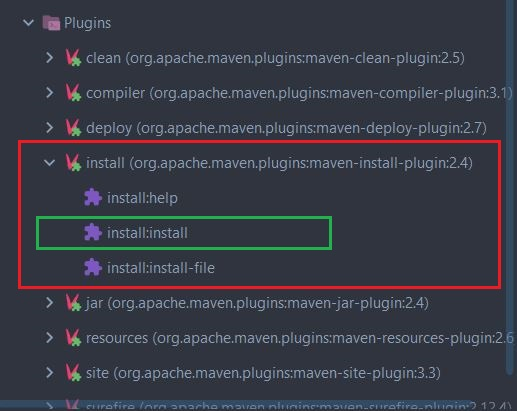
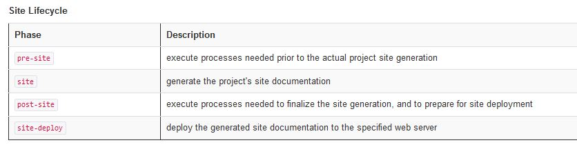
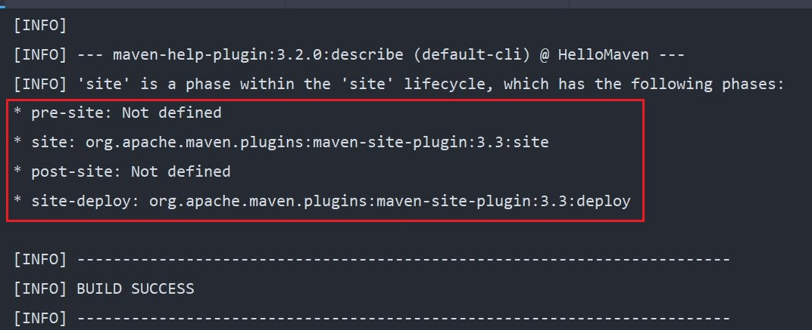
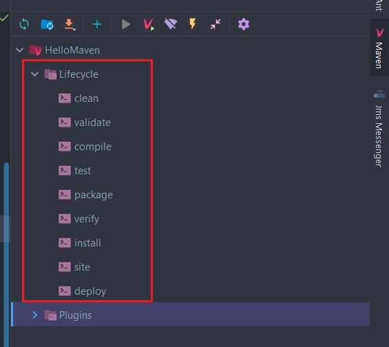

ΕΝΟΤΗΤΑ 6 - Apache Maven Lifecycle (Part 2)

Εισηγητής
ΜΙΧΑΛΗΣ ΚΑΣΑΠΟΓΛΟΥ

ΕΝΟΤΗΤΑ 6 - Apache Maven Lifecycle (Part 2)
Στην προηγούμενη ενότητα είδαμε το clean Lifecycle και όλα τα phases όπως και τα goals από τα οποία αποτελείται το συγκεκριμένο phase. Σε αυτή την δωρεάν ενότητα Apache Maven, θα δούμε το default Lifecycle όπως επίσης και πως μπορούμε να κάνουμε build ένα Java Maven project είτε επειδή το έχουμε δημιουργήσει για πρώτη φορά, είτε γιατί αλλάξαμε κάποιες γραμμές κώδικα και πρέπει να το δημιουργήσουμε ξανά.
Με το clean lifecycle αυτό που θέλαμε να πετύχουμε είναι να καθαρίσουμε το project μας από προηγούμενα builds έτσι ώστε να το χτίσουμε πάλι από την αρχή, ίσως γιατί προσθέσαμε ή γενικότερα αλλάξαμε κάποια σημεία του κώδικα. Αυτό το επιβεβαιώσαμε όταν εκτελώντας το clean είδαμε ότι εξαφανίστηκε o target φάκελλος και όλα τα στοιχεία που είχαν δημιουργηθεί όταν είχαμε τρέξει για πρώτη φορά την εντολή install.
Αφού λοιπόν καθαρίσουμε τα παλαιότερα αρχεία, θέλουμε τώρα για να δημιουργήσουμε το project από την αρχή αφού περιέχει τα καινούργια στοιχεία που έχουμε προσθέσει στον κώδικα. Για αυτό το σκοπό, θα πρέπει να χρησιμοποιήσουμε το default Lifecycle και πιο συγκεκριμένα θα πρέπει να καλέσουμε το install phase. Πριν προχωρήσουμε, ας δούμε πάλι τα 23 phases από τα οποία αποτελείται το default Lifecycle.

Παρατηρώντας την λίστα, θα δούμε ότι το phase install, το οποίο και δημιουργεί το τελικό jar αρχείο του project, βρίσκεται στην προτελευταία θέση. Αυτό σημαίνει ότι όταν τρέχουμε την εντολή mvn install, αυτό θα βρει το phase install, θα ψάξει να βρει ποιο plugin είναι συνδεδεμένο με αυτό το phase και από το plugin θα τρέξει το goal install. Μπορούμε να δούμε το goal install από την λίστα των plugins στο IntelliJ.
Η σειρά των phases όπως εμφανίζονται στην λίστα του default Lifecycle είναι σημαντική, γιατί όποτε τρέχουμε μια εντολή θα τρέξουν όλες οι εντολές από την αρχή της λίστας μέχρι και την εντολή την οποία εκτελέσαμε. Οπότε, όταν τρέξαμε την mvn install εντολή, εκτελέστηκαν όλες τα πιο πάνω phases (και κατά συνέπεια goals) με την σειρά μέχρι και την install για να δημιουργηθεί το project μας.
Αν και δεν έχουμε τελειώσει ακόμα με το default Lifecycle, αφού είναι και το πιο σημαντικό από όλα τα υπόλοιπα Lifecycle, ας ολοκληρώσουμε την κουβέντα μας με μια αναφορά και στο site Lifecycle και μετά θα ξαναγυρίσουμε στο default για να μιλήσουμε για την δημιουργία του project με περισσότερες λεπτομέρειες.
Το site Lifecycle ορίζεται μόνο από τέσσερα phases:
Γενικότερα, το site Lifecycle δεν έχει καμία αξία χωρίς την ύπαρξη του Maven site plugin. Το site plugin χρησιμοποιείται για να δημιουργήσει ένα HTML αρχείο που περιέχει στοιχεία του project και κάποια reports σε σχέση με την δημιουργία του project.
Το site plugin ορίζει οκτώ goals αλλά δύο μόνο είναι άμεσα συνδεδεμένα με τα phases του site Lifecycle. Αυτό μπορούμε να το επιβεβαιώσουμε τρέχοντας την εντολή
mvn help:describe -Dcmd=site

Όπως παρατηρούμε από το αποτέλεσμα εκτέλεσης της εντολής, το site goal του site plugin συνδέεται με το site phase, ενώ το deploy goal του site plugin συνδέεται με το site-deploy phase.
Αυτό που έχουμε δει μέχρι τώρα, είναι μια λίστα από plugins τα οποία προσφέρονται από το Maven. Τα plugins αυτά περιέχουν goals τα οποία έχουν συνδεθεί με κάποια phases. Οπότε η επόμενη ερώτηση είναι ποιος είναι ο ρόλος του Lifecycle στο IntelliJ?
Για να απαντήσουμε αυτή την ερώτηση, θα πρέπει πρώτα να μιλήσουμε για το τι είδος project προσπαθούμε να δημιουργήσουμε. Γενικότερα στην Java μπορούμε να δημιουργήσουμε δύο ειδών αρχεία – τα jars και τα wars. Τα jars είναι για standard edition java εφαρμογές και για microservices που περιέχουν ενσωματωμένους application servers (πχ. Spring Boot) και τα war αρχεία που είναι η καθαρή μορφή μιας Java Web εφαρμογής. Στο δικό μας project δεν έχουμε ορίσει το τι είδος project package θέλουμε να δημιουργήσουμε οπότε το Maven, και κατά συνέπεια το IntelliJ, θεωρεί ότι θέλουμε να δημιουργήσουμε ένα project σε jar μορφή. Το Lifecycle που εμφανίζεται είναι το προτεινόμενο από το Maven για την δημιουργία ενός jar project. Αυτό που κάνει είναι να συνδυάζει phases από όλα τα Maven Lifecycles και να δημιουργεί ένα καινούργιο ειδικά για την δημιουργία jar projects. Κάθε phase σχετίζεται και με ένα plug in και φυσικά με τα αντίστοιχα goals τα οποία το plugin περιέχει. Σχεδόν όλα τα phases προέρχονται από το default Lifecycle. Επειδή όμως εξετάσαμε το clean και το site Lifecycle ας δούμε και το default.
Τρέχουμε λοιπόν την εντολή
mvn help:describe -Dcmd=deploy

Όπως παρατηρούμε, χωρίς εμείς να το έχουμε ορίσει, το είδος του αρχείου που θα δημιουργηθεί θα είναι jar. Είναι όμως συνετό, να ορίζουμε κάποιες παραμέτρους στο POM ασχέτως αν είναι προκαθορισμένα από το σύστημα ή όχι. Έτσι θα έχουμε καλύτερο έλεγχο του project. Ας προσθέσουμε λοιπόν επίσημα την επιλογή αυτή στο POM γράφοντας
Το POM τώρα θα πρέπει να έχει την εξής μορφή:
pom.xml
Η περιγραφή του κάθε ενός phase που είναι συσχετισμένο με κάποιο plugin μπορεί να βρεθεί στο site του Apache Maven ή μπορείτε να διαβάσετε μια γρήγορη περιγραφή στον πίνακα που έχουμε δείξει πιο πάνω. Απλά θέλω να τονίσω το γεγονός ότι το deploy phase δεν σημαίνει ότι κάνω deploy μια εφαρμογή σε έναν application server αλλά ότι κάνω deploy το δημιουργημένο jar αρχείο σε ένα remote repository εκτός του υπολογιστή μας.
Τώρα, νομίζω, θα έχετε καταλάβει γιατί τρέξαμε την εντολή install όταν είχαμε δημιουργήσει το project. Βασικά, εκτελέσαμε το phase install, το οποίο πριν εκτελεστεί θα τρέξουν όλα τα προηγούμενα phases τα οποία περιέχουν συγκεκριμένα goals. Τώρα η ερώτηση είναι, εσείς θα πρέπει να κάνετε κλικ επάνω στην επιλογή install του Lifecycle πλαισίου, ή να γράψετε την εντολή (ή εντολές) στο Execute Maven Goal? Το εύκολο θα είναι να επιλέξετε την επιλογή που σας δίνεται στο Lifecycle, όπως έχουμε τρέξει ήδη. Αν θέλετε όμως να περάσετε κάποια έξτρα παράμετρο στην εντολή τότε θα χρειαστεί να γράψετε την εντολή. Η γνώμη μου είναι να εκτελείτε όλες τις εντολές μέσα από το Execute Maven Goal το οποίο, επειδή γνωρίζει ήδη το LifeCycle και τα plugins, θα σας βοηθήσει καθώς γράφετε τις εντολές σας.
Ποια είναι η πιο συνηθισμένη εντολή που θα τρέχετε σαν προγραμματιστές? Η απάντηση είναι:
mvn clean install
Αυτή η εντολή (βασικά είναι δύο εντολές), κάθε φορά που την εκτελείτε, θα καθαρίζει το προηγούμενο jar, τρέχοντας όλα τα phases από το clean Lifecycle και μετά θα τρέξει όλα τα phases από το default Lifecycle μέχρι και την install phase δημιουργώντας το τελικό jar του project.
Αν θέλουμε να ανακεφαλαιώσουμε, από την πρακτική πλευρά, τι έχουμε μάθει για το Maven μέχρι τώρα, θα λέγαμε ότι γνωρίζουμε το πως να δημιουργήσουμε ένα Java Maven Project μέσα από το IntelliJ, πως να προσθέσουμε το properties για να τρέξει το build process σωστά με την Java 11, πως να καθαρίζουμε και πως να δημιουργούμε καινούργιο jar και τέλος πως να εκτελούμε το project μέσα από το IntelliJ. Τέλεια, μέχρι αυτό το σημείο, αν το project σας δεν χρειάζεται καμία εξωτερική βιβλιοθήκη, όπως πχ Hibernate, τότε μπορείτε να δημιουργήσετε προγράμματα Java, να γράψετε κώδικα και να τα εκτελέσετε.
Στην επόμενη ενότητα θα κλείσουμε την αναφορά μας στο Apache Maven Lifecycle.
Γίνε Χορηγός στη Γνώση
ΕΙΣΗΓΗΤΗΣ
Μιχάλης Κασάπογλου
Ο Μιχάλης Κασάπογλου, είναι ένας από τους πιο έμπειρους τεχνικούς εκπαιδευτές στον χώρο του προγραμματισμού με πάνω από 20 χρόνια εμπειρία. Έχει εργαστεί σαν IT Operations Manager, Senior Programmer, και Training Team Leader ενώ κατέχει και αρκετές πιστοποιήσεις που καλύπτουν ένα μεγάλο φάσμα τεχνολογιών στο προγραμματισμό, σε βάσεις δεδομένων και cloud. Στον ελεύθερο του χρόνο διατηρεί ένα τεχνολογικό blog στο οποίο θα βρείτε αρκετά δωρεάν μαθήματα προγραμματισμού για αρχάριους.